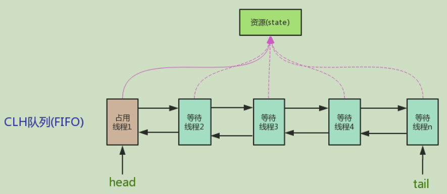

AQS（全称为AbstractQueuedSynchronizer），即抽象队列同步器，它维护了一个volatile int state（代表共享资源）和一个FIFO线程等待队列。
state的访问方式有：getState(); setState(); CompareAndState()

AQS定义两种资源共享方式：
Exclusive独享资源，只有一个线程能执行，如reentrantlock（重入锁）
Share共享资源，多个线程可同时执行，如Semaphore（信号量）/countdownlatch（闭锁）
AQS只是一个框架，定义了一个接口，具体资源的获取/释放方式交由自定义同步器去实现（通过state的get/set/CAS）。之所以没有定义成abstract，是因为独占模式下只用实现tryAcquire/tryRelease，而共享模式下只用实现tryAcquireShared/tryReleaseShared。如果都定义成abstract，那么每个模式也要去实现另一个模式下的接口。不同的自定义同步器争用共享资源的方式也不同。自定义同步器在实现时只需要实现共享资源state的获取与释放方式即可，具体线程等待队列的维护，AQS已经在顶层实现好了。
自定义同步器主要实现方法：
1）isHeldExclusively()：该线程是否正在读占资源。只有用到condition才需要去实现它。
2）tryAcquire(int)：独占方式。尝试获取资源，成功则返回true，失败则返回false。
3）tryRelease(int)：独占方式。尝试释放资源，成功则返回true，失败则返回false。
4）tryAcquireShared(int)：共享方式。尝试获取资源，负数表示失败；0表示成功，但是没有剩余可用资源；整数表示成功，且有剩余资源。
5）tryReleaseShared(int)：共享方式。尝试释放资源，如果释放后允许唤醒后续等待结点返回true，否则返回false。
同步器的实现是AQS核心（state资源状态计数）。
以ReentrantLock为例，state初始化为0，表示未锁定状态。A线程lock()时，会调用tryAcquire()独占该锁并将state+1。此后，其他线程再tryAcquire()时就会失败，知道A线程unlock()到state=0（即释放锁）为止，其他线程才有机会获取该锁。在释放锁之前，A线程可以重复获取此锁（state会累加），这就是可重入的概念。但获取多少次就需要释放多少次，这样才能保证state能回到零态。
以CountDownLatch为例，任务分为N个子线程去执行，state也初始化为N（N要与线程个数一致）。这N个子线程是并行执行的，每个子线程执行完后CountDown()一次，state会CAS减1。等到所有子线程都执行完后（即state=0），会unpark()主调用线程，然后主调用线程就会从await()函数返回，继续后余动作。
一般来说，自定义同步器要么是独占方式，要么是共享方式，但AQS也支持自定义同步器同时实现独占和共享两种方式，如ReentrantReadWriteLock。